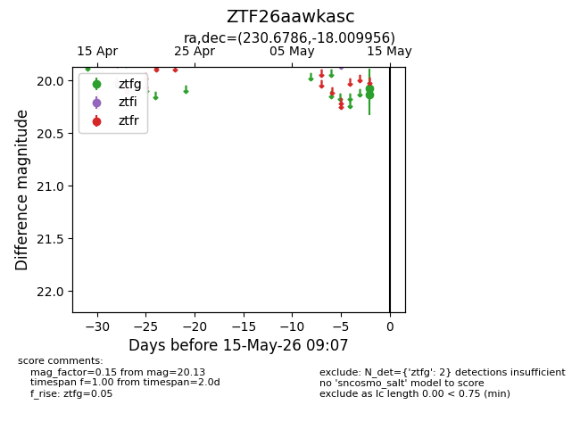
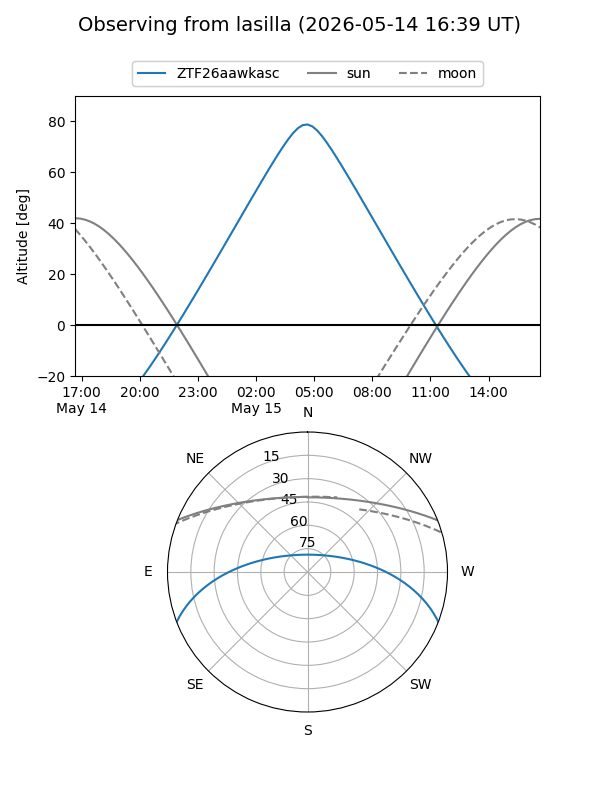
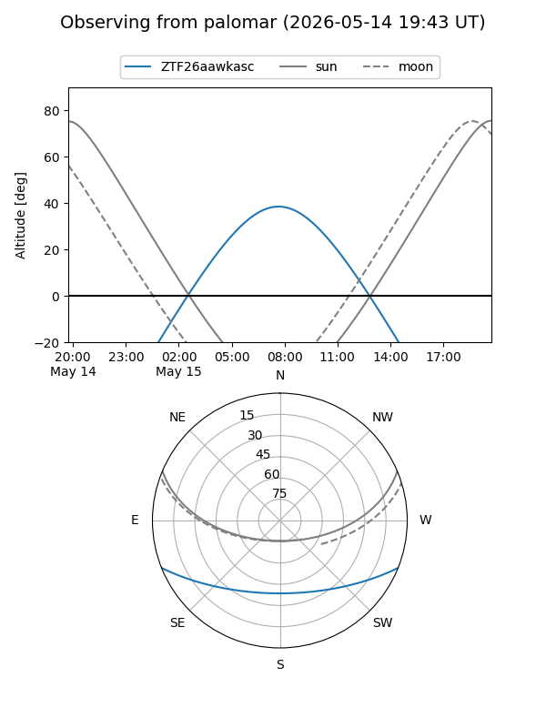

ZTF26aawkasc
Target ZTF26aawkasc at 2026-05-15 09:09
Aliases and brokers:
FINK: link
Lasair: link
ALeRCE: link
alt names
ZTF26aawkasc (ztf,fink_ztf)
Coordinates:
equatorial (ra, dec) = 230.6786,-18.00996
equatorial (HMS+DMS) = 15:22:42.86,-18:00:35.84
galactic (l, b) = (346.2816,+31.84461)
Flags:
Photometry:
last ztfg=20.13
2 ztfg detections
Lightcurve

Visibility


Additional plots